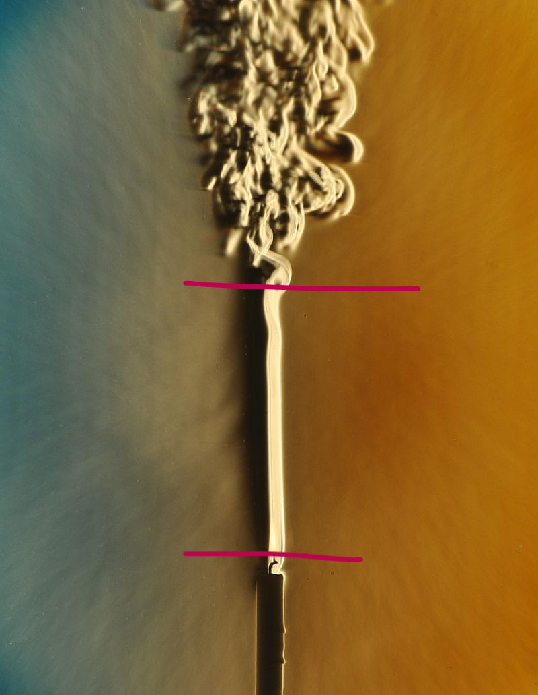

The midterm will be completed asynchronously over canvas. We will not meet in-person on Wednesday the 13th. You can use this time to complete your exam on canvas instead.
The exam will not be timed. It is not intended to take longer that a normal lecture period (80 minutes), but I want you to have more time if you need it.
The exam will be open for 24 hours and may be completed only once.
8 AM Wednesday March 13th to 8 AM Thursday March 24th
Late submissions will not be accepted. If you experience extenuating circumstances, contact me before the exam period closes
The Midterm
It will include topics covered through the end of this lecture. Any topics covered in lecture, assignments, or study questions are fair game.
A collection of multiple choice, fill in the blanks, matching etc. (~65%)
May require some simple calculations
Will be marked automatically and grades will be posted shortly after the exam closes
Short answer questions (~35%)
May require some simple calculations
Will be marked by myself/your TA and posted about a week after the exam closes
Study Questions
Study question sets 1-5 should be submitted before completing the mid-term.
These account for approximately 2.8% of your final grade and are only marked for completeness.
As long as you give an answer for each question (right or wrong) you’ll get full credit.
Mid-term (iClicker)
When and where will the midterm be held?
A: Wednesday March 13th on Canvas
B: Wednesday March 6th in Person
Mid-term (iClicker)
How long should the mid-term take?
A: All day! Don’t make any other plans!
B: About 80 minutes, but you’ll have extra time if needed :)
Color schlieren image of a coughing person (Garry Settles, University of Pennsylvania)
Today’s learning objectives
Define turbulence, and how a turbulent flow differs from a laminar (non-turbulent) one.
Give examples where flow in the atmosphere is purely laminar.
Describe how we can describe mass and heat exchange in a laminar flow.
Mechanisms of Energy Transfer
Radiation: electromagnetic waves
Conduction: molecular motion
Convection: mass movement in a fluid
Viscosity
Viscosity: internal resistance of fluid to deformation.
Can be also interpreted as internal ‘friction’ between adjacent fluid layers or particles.
An inviscid fluid is assumed to have no viscosity.
Effects of viscosity and turbulence are neglected. As a consequence there is is no transport of momentum, energy and mass except via advection.
In some applications, the atmosphere needs to be modelled as a viscous flow.
Viscous flows
Closer to surfaces, flow is always viscous and viscosity plays an important role in boundary layers. In a viscous flow, shear stress \(\tau\) is proportional to the velocity gradient (linearly proportional in a Newtonian fluid):
where \(\mu\) is the dynamic viscosity (kg s-1 m-1) and \(\upsilon = \small\frac{\mu}{\rho}\) is the kinematic viscosity (m2 s-1) and \(\rho\) is fluid density (kg m-3). In laminar flows, \(\mu\) and \(\upsilon\) are molecular properties of the fluid.
\(\upsilon\) varies non-linearly as a function of temperature; so \(\mu\) is a function of both the temperature and density of a substance.
Laminar and turbulent flow
Examples of streamlines in laminar (left) and turbulent (right) flows
Laminar flow
Flow with approximately parallel streamlines. Layers glide by with little mixing or transport across, exchange only occurs by molecular diffusion.
Regular and predictable.
Turbulent flow
Highly irregular, almost random flow that is very diffusive, with 3D curved streamlines. Can apply over large time and space scales. Dissipative in nature.
Cannot be predicted deterministically in time or space: requires statistics
Laminar or turbulent?
The flow between the two red lines could best be described as:
A Turbulent
B Laminar
C Anisotropic
D All of the above

Effect of flow velocity
As flow speed increases, so does the turbulence Source
Effect of viscosity
Turbulence is easier to create in low viscosity fluids
Effect of differential forces
Turbulence
Turbulence is a feature of flows, not fluids.
Turbulent flows are very efficient in equalizing temperature and concentration gradients:
In the Atmosphere, turbulent flows are 105 times faster than molecular diffusion.
Turbulence
Eddies are coherent parts within the moving fluid.
Eddies exist in a wide range of different sizes.
The smallest eddies dissipate to heat.
Leonardo da Vinci’s famous drawing of water poured into a pot: His turbulent flow superimposes different scales of eddies.
Properties of turbulence
Irregular, random, and three-dimensional
Motions are rotational and anisotropic
Diffusive & dissipative
Ability to mix properties
Energy of motion is degraded into heat
Consists of multiple length scales
Large scales of energy input break down into smaller and smaller scales
“Big whirls have little whirls, That feed on their velocity; And little whirls have lesser whirls, And so on to viscosity.”
― Lewis Fry Richardson
Visualizing the LBL
The LBL can be made visible using the Schlieren photography. This technique uses the temperature dependence of the index of refraction of air.
Schlieren photograph of rabbit’s head (cooler air: dark, warmer air: light)
The laminar boundary layer (LBL)
This thin layer (5 to 50 mm) is very important.
It adheres to all objects and because diffusion is very poor (molecular) it provides a buffer between the object and the turbulent air above.
Measurements in the LBL of leaves with a hotwire probe (Photo: R. Jassal, UBC).
Importance of the LBL
The principles we’ll learn about the LBL are important in developing formulae for calculating:
rates of transpiration and evaporation from leaves
rates of CO2 uptake by leaves (plant growth)
rates of pollutant (O3, SO2) deposition on leaves
rates of heat loss from buildings, humans, & animals
Describing exchange in the LBL
Fluxes that pass through the LBL (molecular transport) are proportional to gradients between surface and turbulent atmosphere.